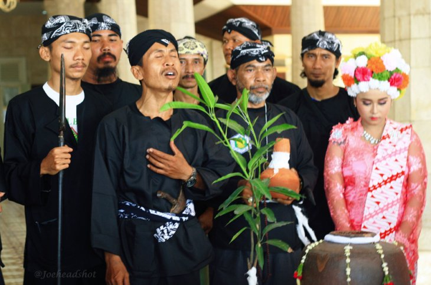
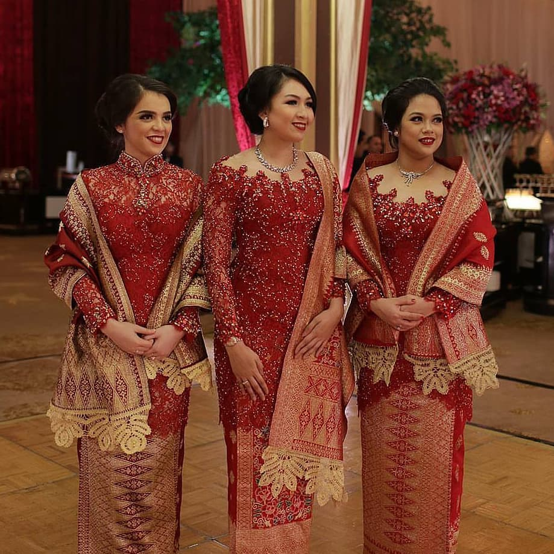
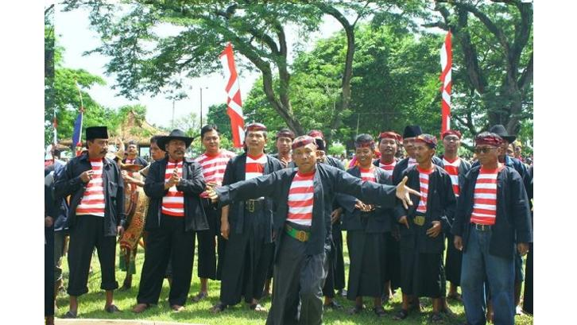

Baju Gothil
Pakaian adat Jawa Timur ini merupakan ciri khas yang dipakai oleh para pria. Baju gothil juga disebut pakaian warok ponorogo. Warna pakaian tradisional ini juga khas yakni hitam polos dengan ukuran longgar serta lengan panjang. Kalau Anda sering menonton pertunjukan Reog Ponorogo, Anda pasti mengetahui pakaian adat yang satu ini. Baju adat ini memiliki pasangannya, yakni Celana Komprang. Ukurannya yang besar dan longgar saat dipakai seolah memberi ruang pada penggunanya untuk menikmati ruang gerak. Bentuk celana ini cukup unik, ditambah lagi celana ini dijahit dengan teknik khusus.Di bagian pinggang, celana diberi kolor yang terbuat dari bahan lawe dengan ujungnya yang menjuntai ke bawah. Bentuk ini dapat menambah kesan gagah dan sangar bagi pemakainya
Kebaya Rancongan
Pakaian adat Jawa Timur yang satu ini memang kental oleh pengaruh Suku Madura, yaitu Kebaya Rancongan. Kebaya rancongan memang sering dikenakan oleh wanita Madura. Motifnya sederhana, biasanya terbuat dari kain tipis dan menerawang, seperti brokat. Agar kebaya ini nampak serasi dengan bawahannya, wanita Madura mengenakan kain batik yang dikenakan seperti rok panjang. Motifnya bisa beragam, contohnya Lasem, Strojan, dan Tabiruan. Sebagai pelengkap mengenakan Kebaya Rancongan, ada beberapa perhiasan yang mereka kenakan adalah giwang emas, kalung emas yang berbentuk biji jagung, dan sisir emas yang dinamakan Sisir Dinar atau Sisir Cucuk.
Pesean
Baju ini berasal dari Pulau Madura. Baju Pese’an terbilang unik dan mudah dikenali. Contoh yang paling banyak kita saksikan dalam kegiatan sehari-hari, pakaian ini kerap kali Anda temui digunakan oleh pedagang sate Madura. Untuk pria, pakaian terdiri dari kaos warna cerah mencolok dan celana hitam longgar. Ukurannya serba besar dan tidak pas di badan.